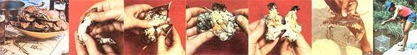

FROM LEFT: It's hard to imagine a more delicious dinner than a repast of free-for-the-foraging crabs and cold beer!. . . First, crack the claws and extract the tasty lumps of meat found there .... Remove the ""key"", a flap attached to the rear of the crab's shell .... All the meat on the inside can be eaten except the white coiled stomach and grayish ""dead man's fingers "" . . . . Crack the crab in half to get at the remaining pockets of succulence .... This is the proper /and safe) way to hold a live crab .... Bait a wire trap with a chicken neck for successful crabbing.